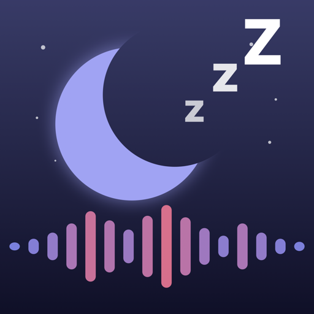
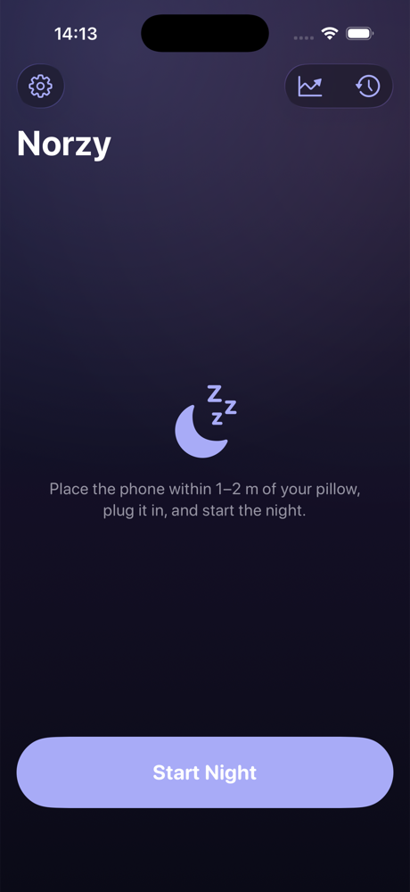

NorzyNorzy listens while you sleep — real machine-learning snore detection, full-night audio you can replay second by second, and a morning report that shows what actually helps.

Most snore apps trigger on anything loud. Norzy runs Apple's on-device sound classifier — a trained ML model with a dedicated snoring class — and layers its own filtering on top.
A trained sound classifier recognizes snoring itself — validated against real recordings: zero false positives on dogs, vacuum cleaners, rain, coughing and laughter.
Continuous recording in 5-minute chunks. Tap any point of the night timeline and hear exactly what happened.
An adaptive room-noise gate ignores fans, white noise and the TV — the false positives that plague other trackers.
Long silences ending in a sharp snort are flagged with a pauses-per-hour count. Not a diagnosis — a reason to see a doctor early.
Snore Score, minutes and % of the night, loudness bands, hour-by-hour breakdown, every episode listed and playable.
Tag nights with factors — alcohol, nasal strip, mouth tape, sleeping position — and see their measured effect on your score over time.
Said something at 3 AM? It's a separate category in the report, with playback.
Nights sync to Health; sleep stages from your Apple Watch overlay the snore timeline — see if you snore in deep sleep.
No wearables, no calibration, no account.
Put the phone within a couple of meters of your pillow, plug it in, tap Start. Lock the screen — recording continues.
Norzy records and classifies sound in real time, entirely on the device. Calls and alarms are handled gracefully.
Score, episodes, charts, breathing pauses — and the exact audio behind every number, one tap away.
Everything — recording, ML analysis, reports — happens on your iPhone. Audio never leaves the device. No account, no cloud, no analytics. Old audio auto-deletes after a configurable number of nights.
No. Norzy is an awareness tool. Breathing-pause flags and scores are informational; if your reports look concerning, take them to a doctor — a few weeks of exported data is a great starting point for a sleep-study conversation.
Overnight recording with ML analysis uses real energy — keep the phone plugged in, like every overnight sleep tracker.
About 115 MB per 8 hours (compressed AAC). Reports are kept forever; audio is pruned automatically after N nights — your call.
Dogs, fans, rain and traffic don't fool the classifier. A snoring partner next to you will be picked up though — snoring is snoring. Per-person separation is on the roadmap.